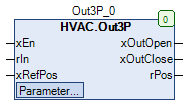

Out3P (FB)¶
FUNCTION_BLOCK Out3P
Short Description¶
Conversion of an analog value (e. g. P-controller) into output signals for a 3-point actuator (pulse width modulation).In addition, a reference position (limit switch) of the actuator can be detected.
Portrayal¶

Interfaces¶
Inputs¶
Name Datatype
Range
Init-Value
Function
xEn BOOL Enable Functionblock
rIn REAL Inputsignal
xRefPos BOOL Digital input to detect the reference position (limit Switch).
Outputs¶
Name Datatype
Range
Init-Value
Function
xOutOpen BOOL Output variable Plus/More for the drive
xOutClose BOOL Output variable Minus/less for the drive
rPos REAL 0.0 ... 100.0 Analog signal for the current position
Setpoints / Parameters¶
Name Datatype
Range
Init-Value
Function
iRefPosition INT 0 - 100 0% Reference position of the drive
tImpulsClose TIME 1s Duration of a pulse at the output Minus/less than
tImpulsOpen TIME 1s Duration of a pulse at output Plus/More
rMinLimit REAL -100.0 Integral value for pulse triggering at the output minus/less than
rMaxLimit REAL 100.0 Integral value for pulse triggering at output Plus/More
rDuration TIME 120s Operating time of the drive
tIntegration TIME 100ms Duration between two integration processes
Functional Description¶
General¶
Enable input xEn¶
Reference position¶
Signal generation¶
Example
Examples with different parameters
Position display rPos¶
Visualization¶
Information¶
Element Authors
Date
Version Note
Function
Adam Bartod 11.2016 1.0 Init-Version
Programming
Adam Bartod 02.2017 1.0 Init-Version
Test Jochen Reu / 02.2017 1.0 Init-Version
Documentation
Jochen Reu 10.2017 1.0 Init-Version
Codesys¶
- InOut:
Scope Name Type Initial Comment Input xEn BOOL Enable Functionblock
rIn REAL Inputsignal
xRefPos BOOL Digital signal for detecting the reference position (limit switch)
iRefPosition INT 0 Reference position of the drive
tImpulsClose TIME TIME#1s0ms Duration of a pulse at the output Minus/less than
tImpulsOpen TIME TIME#1s0ms Duration of a pulse at output Plus/More
rMinLimit REAL -100.0 Integral value for pulse triggering at the output minus/less than
rMaxLimit REAL 100.0 Integral value for pulse triggering at output Plus/More
tDuration TIME TIME#2m0s0ms Operating time of the drive
tIntegration TIME TIME#100ms Duration between two integration processes
Output xOutOpen BOOL Output variable Plus/More for the drive
xOutClose BOOL Output variable Minus/less for the drive
rPos REAL Analog signal for the current position